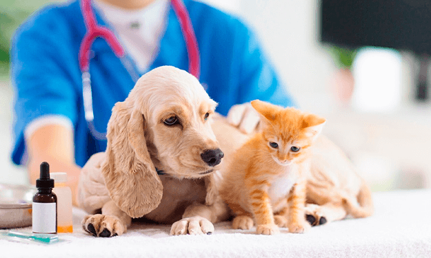
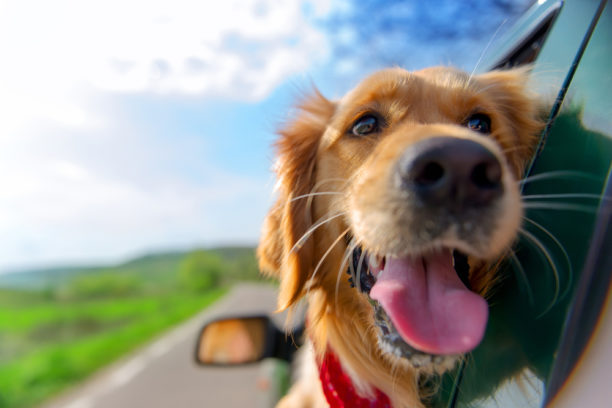

Cuidados y educacion para su mascota
Cuando uno decide tener un perro no sabe que al igual que los niños, no vienen con un manual de instrucciones, y luego al dejarse aconsejar por ese señor del parque que entiende mucho de perros, acaban teniendo muchos problemas de comportamiento. El perro NO es un juguete ni se debe regalar a alguien que no esté preparado o dispuesto a empezar con esta aventura. Lo primero que le explico a mis clientes, es que por mucho que lo quieran, el perro es un perro, y el tratarlo como un humano es lo que hace que empiecen a surgir problemas. Una parte muy importante de la educación del cachorro es que se acostumbre a no estar las 24 h acompañado de sus dueños ya que de esta manera se hará independiente y los dueños podréis iros a una cena sin tener que dejar a la abuela al cargo del peque de la casa. Cuando yo me voy de cena se queda la abuela, pero mi peque es de dos patas, los perros se deben quedar solos perfectamente. ver mas...
Salir de viaje con tu mascota

Viajar juntos resulta muy divertido y una gran experiencia siempre que estemos correctamente preparados. Muchas personas tienen animales de compañía y comprenden los grandes obstáculos de viajar con ellos. El coste de llevarlos en avión o tren es alto y una vez llegamos a nuestro destino, nos encontramos con que en pocos hoteles admiten a nuestro animal. Sin embargo, antes de que tomes una decisión definitiva, existen múltiples maneras de disfrutar de tus vacaciones con tu mascota. ver 5 razones por las cuales debes viajar con tu mascota